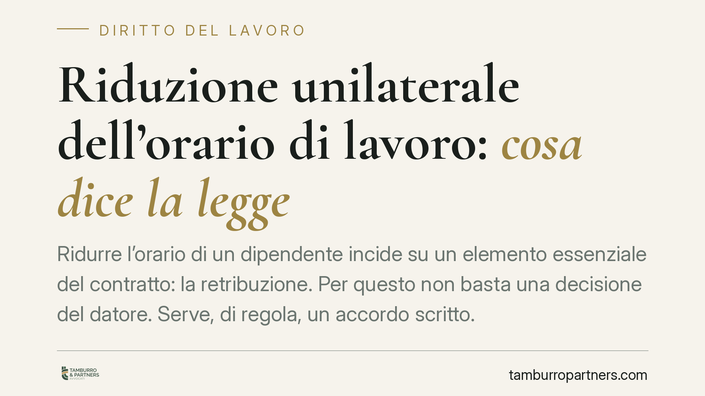

Riduzione unilaterale dell'orario di lavoro: cosa dice la legge
Ridurre l'orario di un dipendente incide su un elemento essenziale del contratto: la retribuzione. Per questo non basta una decisione del datore. Serve, di regola, un accordo scritto. Vediamo cosa prevede la normativa, quando la riduzione integra una trasformazione a part-time e quali strade restano percorribili per l'impresa in difficoltà.

Il caso
Un'impresa attraversa un calo di commesse e comunica ad alcuni dipendenti la riduzione dell'orario settimanale, con proporzionale taglio della retribuzione. Nessun accordo firmato: una semplice lettera. Il lavoratore che rifiuta continua a presentarsi per l'orario pieno; il datore reagisce ipotizzando un provvedimento disciplinare.
È uno scenario ricorrente, e la sua soluzione non dipende dalle intenzioni delle parti ma dalla struttura del rapporto di lavoro. L'orario incide direttamente sulla retribuzione: toccarlo significa modificare una condizione essenziale del contratto.
Inquadramento normativo
Il perno della questione è l'art. 2103 del codice civile, che disciplina il cosiddetto *ius variandi*, cioè il potere del datore di modificare le mansioni del lavoratore. La norma consente margini di flessibilità sulle mansioni, entro limiti precisi, ma non attribuisce al datore il potere di ridurre unilateralmente l'orario e la retribuzione. Questi restano elementi patrimoniali del contratto, sottratti alla disponibilità unilaterale di una sola parte.
Va tenuto distinto l'art. 2104 c.c., che riguarda la diligenza del prestatore di lavoro e l'obbligo di osservare le disposizioni impartite: da qui deriva l'obbligo di obbedienza del dipendente, ma solo rispetto a ordini legittimi. Un ordine che modifica in peius la retribuzione non rientra in questo perimetro.
Un chiarimento sul rapporto con il lavoro a tempo parziale. L'art. 6 del d.lgs. 81/2015 regola la trasformazione del rapporto da tempo pieno a tempo parziale, che richiede sempre il consenso del lavoratore e la forma scritta a fini di prova. Attenzione, però: non ogni riduzione oraria integra tecnicamente una trasformazione a part-time. Quando la riduzione è strutturale e stabile, così da modificare la tipologia del rapporto, si applica pienamente l'art. 6. Quando invece è temporanea o marginale, la disciplina di riferimento resta quella generale del codice civile. In entrambi i casi, il denominatore comune è l'assenza di un potere unilaterale del datore.
Sul piano degli effetti, l'atto unilaterale che riduce orario e retribuzione senza accordo è privo di efficacia nei confronti del lavoratore: non gli è opponibile. Se poi la comunicazione mira a modificare stabilmente la tipologia del rapporto in violazione dei requisiti di legge, la giurisprudenza di merito ne ha affermato l'invalidità. La distinzione tra nullità e mera inefficacia dipende dalla concreta qualificazione dell'atto, ma il risultato pratico è comune: il dipendente conserva il diritto alla retribuzione piena.
Implicazioni pratiche
Per il datore. La riduzione imposta espone a un doppio rischio: il pagamento delle differenze retributive maturate e l'illegittimità di eventuali provvedimenti disciplinari fondati sul rifiuto del lavoratore. Il dipendente che non accetta una modifica illegittima non commette alcun inadempimento: il rifiuto non giustifica sanzioni né licenziamento.
Per il lavoratore. Chi riceve una comunicazione di riduzione oraria non è tenuto ad accettarla. Continuare a offrire la prestazione per l'orario contrattuale è la condotta corretta per conservare i propri diritti. È bene, però, formalizzare il dissenso per iscritto, così da evitare che un comportamento acquiescente venga interpretato come accettazione tacita.
Un'alternativa legittima esiste. L'impresa in difficoltà non è priva di strumenti. Gli ammortizzatori sociali, e in particolare la Cassa integrazione guadagni, consentono di ridurre l'attività lavorativa in modo regolato, con copertura del reddito del dipendente. È la via corretta per gestire cali produttivi, in alternativa a soluzioni unilaterali destinate a essere contestate.
Cosa fare in concreto
- Formalizzare sempre per iscritto ogni modifica dell'orario tramite accordo firmato da entrambe le parti.
- Verificare la natura della riduzione: se stabile e strutturale, applicare i requisiti dell'art. 6 d.lgs. 81/2015 sulla trasformazione a part-time.
- Non adottare provvedimenti disciplinari fondati sul solo rifiuto del lavoratore di accettare una modifica peggiorativa.
- Valutare gli ammortizzatori sociali (CIG) come strumento regolato per gestire i cali di attività.
- Documentare per iscritto eventuali dissensi e comunicazioni, in entrambe le prospettive.
Un punto fermo
L'orario non è una variabile che il datore possa manovrare da solo. Incide sulla retribuzione e, con essa, su un elemento essenziale del contratto. La regola è chiara: senza accordo scritto, la riduzione non produce effetti verso il lavoratore. Le difficoltà d'impresa vanno affrontate con gli strumenti che l'ordinamento mette a disposizione, non con decisioni unilaterali destinate a rivelarsi fragili.
---
Contributo informativo a cura di Tamburro & Partners Avvocati (Avv. Giuseppe Tamburro). Non costituisce parere legale.
Ogni storia di lavoro ha i suoi tempi.
Se gestisci HR e vuoi un confronto su contenzioso, ispezioni o licenziamenti, scrivi allo studio. Ti rispondiamo entro un giorno lavorativo.